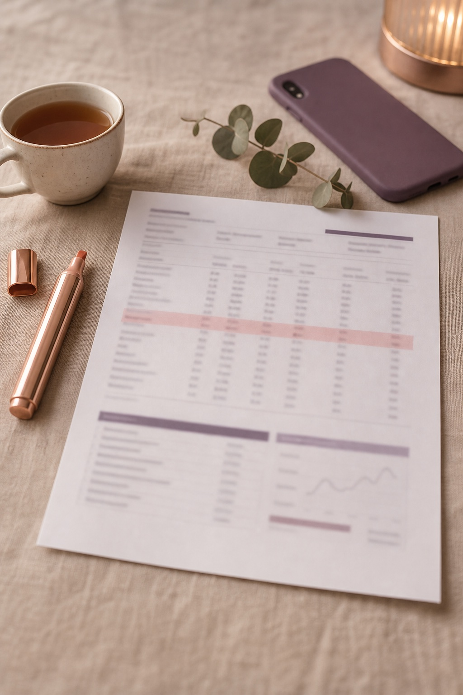
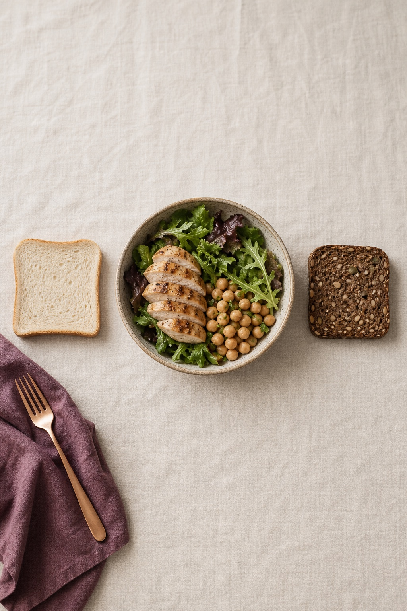

Скриншоты Cysta AI 2.0
Метод Hepatica и Refluxora: боль словами человека → узнаваемая сцена → один конкретный результат на карточке. Порядок кадров задают боли, пересчитанные под то, что реально есть в приложении после спринта V2.
Архив r3 · 19.09 · отклонён владельцем (плохое качество, не как Hepatica / Refluxora)Для правки достаточно номера кадра: «S02 — фото оставить, заголовок на …». Кадры открываются в полном размере 1320×2868 по ссылке под каждым.
Боли → кадры
Сила боли 0–4 и «заплатит» — Jev, 24 человека × 2 прохода (research/positioning-pains-jev-2026-09-18). Столбец «В 2.0 сейчас» — сверено с кодом, а не с планом. Порядок кадров утверждён владельцем.
| # | Боль словами пользователя | Сила | Заплатит | Сильнее всего у | В 2.0 сейчас | Кадр |
|---|---|---|---|---|---|---|
| 1 | «Не знаю, какие анализы сдавать и что значат результаты» | 2.70 | 0.19 | Naomi 3.32 · Anna | Каждое значение против диапазона её бланка, «N of 19 outside», карта «How your results connect», Learn more, вопросы врачу из её значений есть | S01 · 1-й |
| 2 | «Не знаю, что есть; советы противоречат друг другу» | 2.45 | 0.18 | Wendy 3.34 | Фото тарелки → белок / клетчатка / углеводы → одна замена; недельный паттерн; «Can I eat this?» есть | S02 · 2-й |
| 6 | «Врачи отмахиваются: просто похудей» | 2.39 | 0.07 → 0.20* | Anna 2.87 | Your doctor page: диагноз, лекарства и добавки с датами, анализы, «since last visit», вопросы, Send as PDF есть | S05 · 3-й |
| 3 | «Работает ли то, что я принимаю, и сколько ждать?» | 2.67 | 0.10 | Tanya 3.18 · Maya 2.98 | Даты проверки (инозитол 8–12 нед, метформин 12–24), «Too early to judge», трек курса, starting point → now есть | S03 · 4-й |
| 4 | «Цикл нерегулярный, приложения выдумывают даты» | 2.58 | 0.11 | Tanya 3.46 | Дуга цикла, «7 periods in 12 months · next likely day 34–49», импорт из Apple Health есть | S04 · 5-й |
| 5 | «Страшно за будущее, я одна с этим» | 2.74 | 0.04 | Naomi 3.25 | Ask: ответ ≤90 слов + «Tell me more», источники NHS / MedlinePlus / OWH / NICHD; план «Your first 90 days» подзаголовок переписан | S06 · 6-й |
| — | «Мои данные о здоровье уйдут неизвестно куда» | — | — | все, страховка | Без аккаунта, записи в файлах на iPhone, Export my record, Delete all my data экрана Privacy нет | S07 · 7-й |
| — | Позиционирование «between doctor visits» | — | 0.43 | Anna 0.96 | Today по её теме + вкладки Today · Ask · My PCOS · Doctor есть | S08 · 8-й |
| 7 | «Пытаюсь забеременеть — овулирую ли я?» | 1.93 | 0.15 | Tanya 3.72 | Окно диапазоном, LH-тесты не на витрине | — (решение владельца) |
* После появления страницы врача и подготовки к визиту «продолжит платить» выросло на 0.4–0.9, а страница стала главным платёжным мотивом (Jev 0.20). Поэтому она стоит третьей, хотя по силе боли шестая.
Первые три кадра · r3
Переделано по замечанию владельца: на маленьком экране среди других приложений заголовки были мелкими, а кадр перегружен. Теперь как у Hepatica: 2 строки крупно → один узнаваемый предмет → 2 буллета. Предмет, заголовок и низ выбраны турниром Jev (24 × 2) из трёх вариантов каждый. Фото — новые генерации (OpenRouter, GPT Image 2). Подписи на предметах — HTML, в картинке нет текста.


Your Labs,Made Clear

- Every value vs your range
- Questions for your doctor
Jev r3 · что выбрали
Предмет: бланк с выделенной строкой 0.87 · женщина с бланком 0.13 · анатомия яичников 0.00
Заголовок: «Your Labs, Made Clear» 0.42 · «What Do Your Labs Mean?» 0.38 (почти ничья) · «PCOS Labs Explained» 0.21
Низ: два буллета 0.84 · одна плашка 0.11 · маленький телефон 0.05
Первым кадром: анализы 0.49 · врач 0.31 · еда 0.20
Что проверить. Почти ничья заголовков — можно дать A/B в App Store (Product Page Optimization). В заголовке нет слова PCOS: узнаваемость держится на предмете и буллетах.
Snap Your PlateGet One Swap

- One swap, not a diet
- Nothing banned
Jev r3 · что выбрали
Предмет: тарелка сверху со стрелкой замены 0.88 · женщина фотографирует обед 0.11 · кафе и меню 0.01
Заголовок: «Snap Your Plate / Get One Swap» 0.71 · «What Can I Eat With PCOS?» 0.21 · «PCOS Plate» 0.08
Низ: два буллета 0.61 · плашка 0.21 · телефон 0.18
Что проверить. Белый хлеб не должен читаться как «запрещено» — поэтому буллет «Nothing banned». Проверить стрелку в превью 200 px.
Doctor Visit?Bring One Page
- Labs, meds & cycle
- Your questions ready
Jev r3 · что выбрали
Предмет: одна страница на планшете с галочками 0.69 · передаёт страницу врачу 0.29 · в приёмной с папкой 0.02
Заголовок: «Doctor Visit / Bring One Page» 0.66 · «10-Minute Visit? Come Prepared» 0.28 · «Walk In With Your Whole Story» 0.06
Низ: два буллета 0.69 · плашка 0.24 · телефон 0.07
Что проверить. Прошлый победитель r1 «Walk in with your whole story» в коротком формате проиграл (0.06). Вопросительный знак после «Doctor Visit» добавлен по образцу Hepatica — можно убрать.
Стоимость r3: 4 генерации, $0.23 (одна на сравнение моделей: Gemini 3.1 Flash Image $0.10 дал полосы сверху и снизу, GPT Image 2 medium $0.04 — лучше). Данные Jev: research/screenshots-r3-jev-2026-09-19/.
Вся восьмёрка: статус
| Кадр | Заголовок / подзаголовок (Jev) | Экран приложения | Фото | Статус |
|---|---|---|---|---|
| S01 | Your Labs, Made Clear · r3 Jev 0.42 | Бланк с выделенной строкой «Testosterone 58 · above range» | новая генерация r3 | r3 на ревью |
| S02 | Snap Your Plate / Get One Swap · r3 Jev 0.71 | Тарелка сверху, стрелка white bread → whole-grain | новая генерация r3 | r3 на ревью |
| S03 | Doctor Visit? Bring One Page · r3 Jev 0.66 | Одна страница: Labs · Cycle · Medicines · Questions | новая генерация r3 | r3 на ревью |
| S03 | Too early to judge? We'll say so Check-in dates from when studies look · Jev r2 0.56 (0.71/0.42) против старого «Stop guessing…» 0.19 — без даты, не устареет | Трек курса: starting point → now, «Too early to judge» | онбординг supplements или новая | заголовок обновлён |
| S04 | Irregular cycle? No fake dates A real range from your own history · w 0.49 | My PCOS: плитки цикла, next likely Oct 9 – Oct 26 (так считает код; на Today есть строка fertile window — не снимать) | онбординг cycle | без fertile window |
| S06 | PCOS answers you can check Short answers. Sources you can open. · Jev r2 0.56 (0.57/0.55) против «Is that PCOS advice true?» 0.28 и «Ask anything. See the source.» 0.16 | Ask: шапка «AI · not a doctor», ≤90 слов, источники | онбординг diagnosis | подзаголовок обновлён |
| S07 | Your PCOS stays private No account. Records stay on your iPhone. · w 0.64 | Settings → Data & privacy: переключатель AI, Export my record, Delete all my data | новая (натюрморт) | только существующее |
| S08 | Your PCOS between visits Answers, labs and a page for your doctor · w 0.71 | Today одной темы + Today · Ask · My PCOS · Doctor | без фото или outcome-explore | после фикса Today |
Дальше
- Сделано (Jev r2, 24 × 2, 48/48): карточки первых трёх выиграли у вариантов Fable; S03 получил заголовок без даты; S06 — новый подзаголовок без гайдлайна 2023. Оговорка: карточки со страницы описаны для Jev подробнее (строки, цвета статуса), чем текстовые варианты — часть перевеса даёт наглядность. Данные:
research/screenshots-cards-jev-2026-09-19/. - После вашего «ок» по первым трём: кадры 4–8 тем же шаблоном; 6 из 8 кадров на готовых фото; новые генерации — натюрморт S07 и тарелка сверху для экрана S02, ~$1–2 на OpenRouter.
- Перед App Store: экспорт этих же кадров в PNG 1320×2868 без альфы. Снимки симулятора не обязательны — карточка остаётся увеличенной пользой, как у Refluxora; сверяем только, что каждая строка есть в выпускаемой сборке.
- Локализация: только текст (JSON), фото не перегенерируются — как 400 кадров Refluxora.
Как прислать правки
Скопируйте, заполните нужные строки и пришлите в чат. Пустые строки = без изменений.
Ревизия: r3 Первый кадр: S01 / S03 / свой вариант Порядок: S01 → S02 → S03 (врач) → работает ли → цикл → Ask → приватность → итог S01 — оставить / изменить / убрать · заголовок: … · подзаголовок: … · карточка: … · фото: … S02 — … S03 — … Общее (цвет, шрифт, фото, тон): …
Ревизии
| Ревизия | Дата | Что изменилось | Почему | Открыть |
|---|---|---|---|---|
| r3 · текущая | 19.09 | Новый формат как у Hepatica: заголовок вдвое крупнее, один предмет во весь кадр (бланк с выделенной строкой, тарелка со стрелкой замены, одна страница для врача), 2 буллета. Новые генерации вместо фото онбординга. S03 = врач («Doctor Visit? Bring One Page») | Владелец: мало аффинитивности, мелко в поиске, перегружено. Jev r3: предмет 0.87 / 0.88 / 0.69 против людей; 2 буллета 0.84 / 0.61 / 0.69 | эта страница |
| r2 | 19.09 | Карточки первых трёх прошли турнир Jev; S03 — заголовок без даты «Too early to judge? We'll say so»; S06 — подзаголовок «Short answers. Sources you can open.»; слабые места по кадрам; кадры в полном размере | Jev r2 (24 × 2): карточки 0.78 / 0.49 / 0.55; гайдлайн 2023 убран из базы знаний | archive/r2 ↗ |
| r1 | 19.09 | Первая версия: боли → кадры по состоянию спринта V2, три кадра на фото онбординга, «Кому откликается» | Бриф 18.09 + 70 коммитов спринта | archive/r1 ↗ |
Каждая новая ревизия: прошлая копируется в archive/rN/, здесь добавляется строка «что изменилось и почему». Утверждённые кадры не перезаписываются.